Due to its hardness, fountain pen nibs are sometimes made from alloys which contain this transition metal.
Which is it?
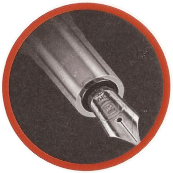
Paul McCartney was presented with a disc plated with this transition metal for being the best selling
song writer in history. Which is it?
Flutes and other musical instruments are sometimes made using this transition metal.
Which is it?
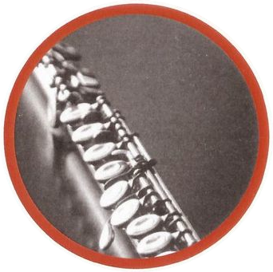
This transition metal has a wide variety of uses, including its traditional use in the making
of fine cutlery which was typically passed down through generations of families.
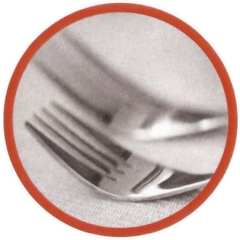
This transition metal is often used in paint pigments and produces brilliant reds and yellows.
Which is it?
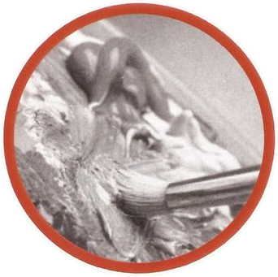
This transition metal is often used as an electrode in plasma cutting tools.
Which is it?
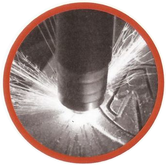
This transition metal is widely used in the electronics industry for the manufacture of capacitors
and resistors Which is it?
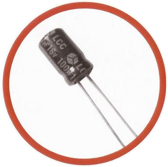
Razor blades are sometimes coated with this transition metal in order to maintain a sharp edge.
Which is it?
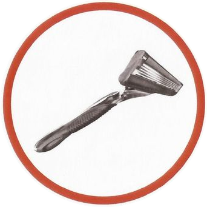
Some parts of jet engines are made from this transition metal.
Which is it?
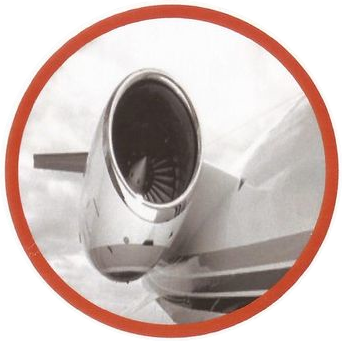
Needles in old record players were sometimes made from this transition metal.
Which is it?
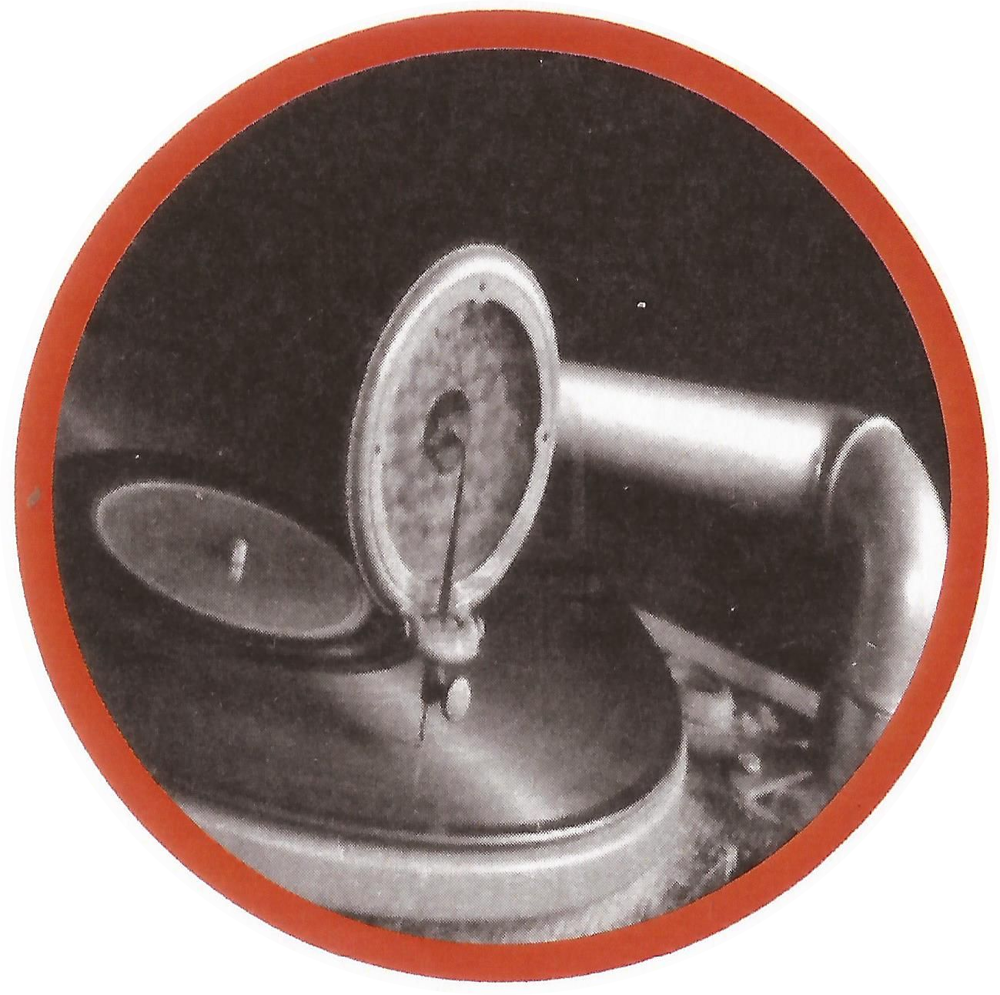
The international prototype metre is made from an alloy of this transition metal.
Which is it?
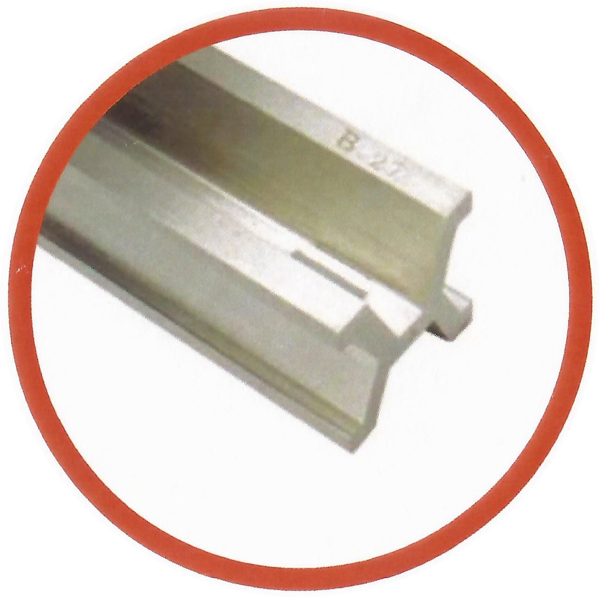
This transition metal is used in catalytic converters which minimise the pollution given off by
a car's exhaust
Which is it?
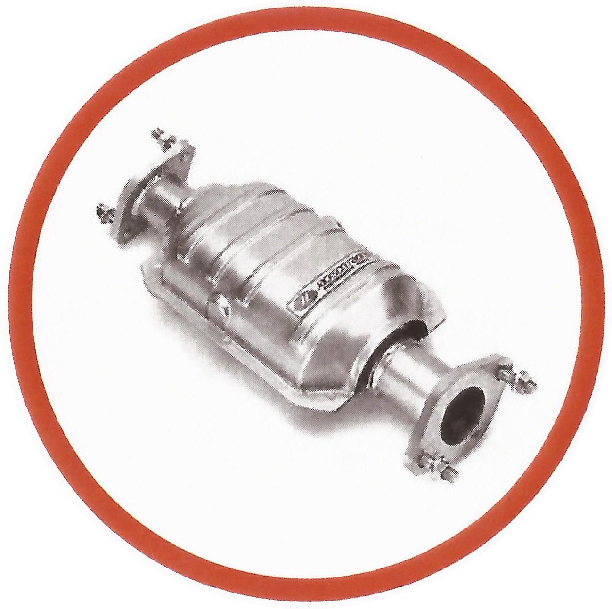
The United States Bullion Depository contains over 4,000 tons of this valuable transition metal.
which is it?
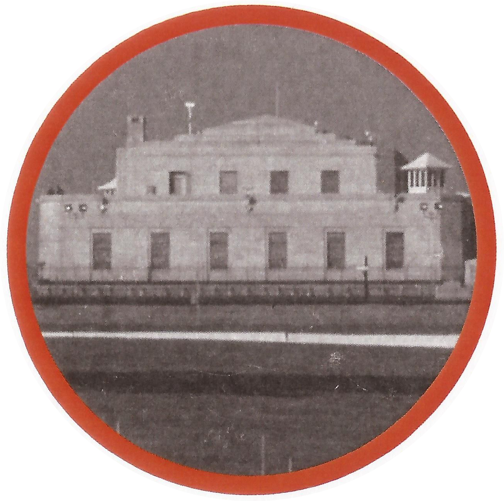
Thermometers sometimes contain this transition metal...
Which is it?
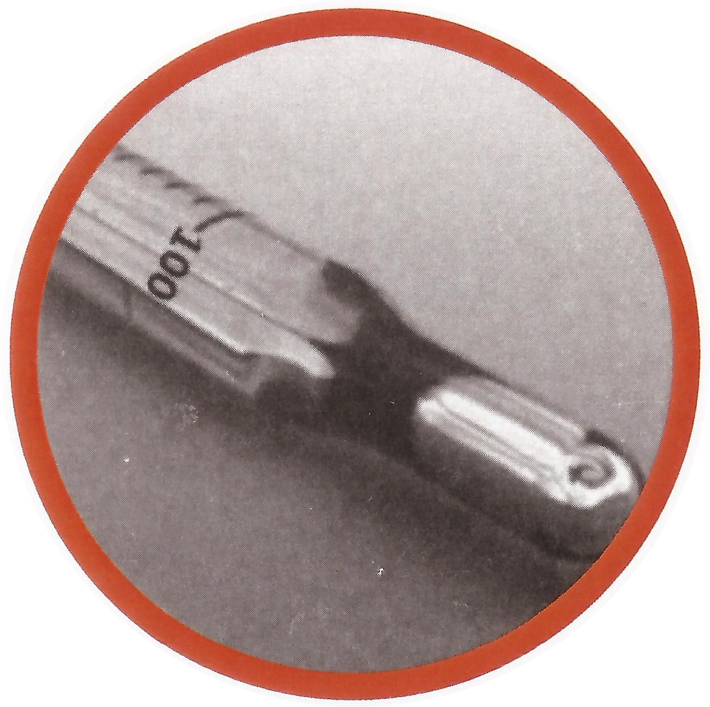
This transition metal is named after the Nobel Prize winning scientist who was the first to split
the atom. Which is it?